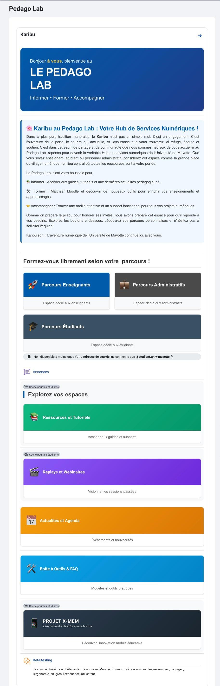
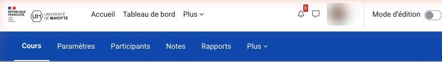
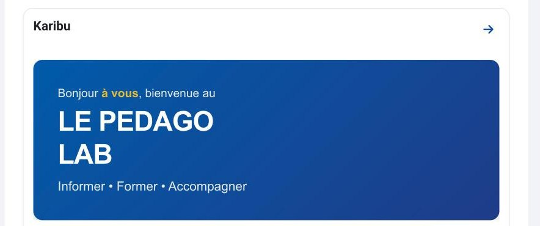
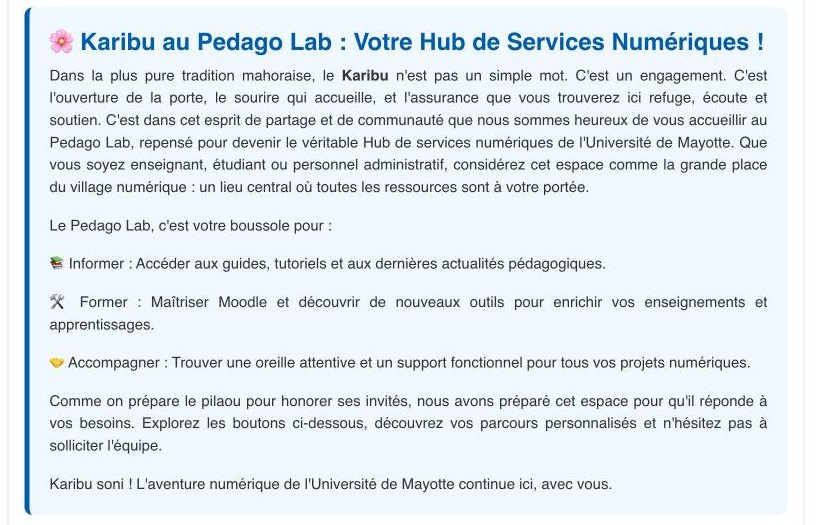
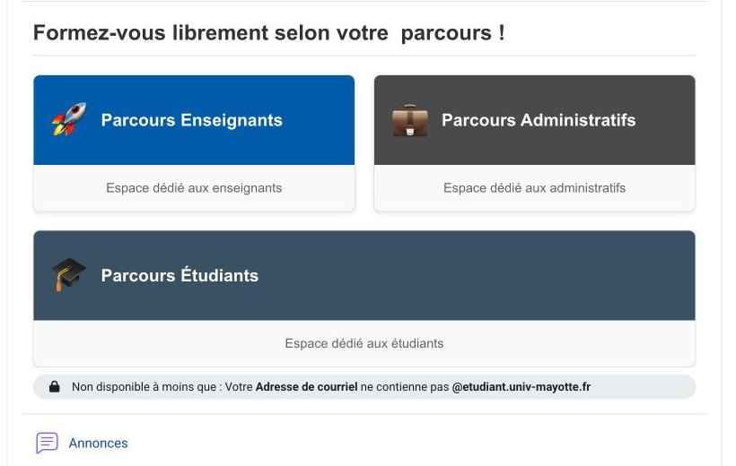
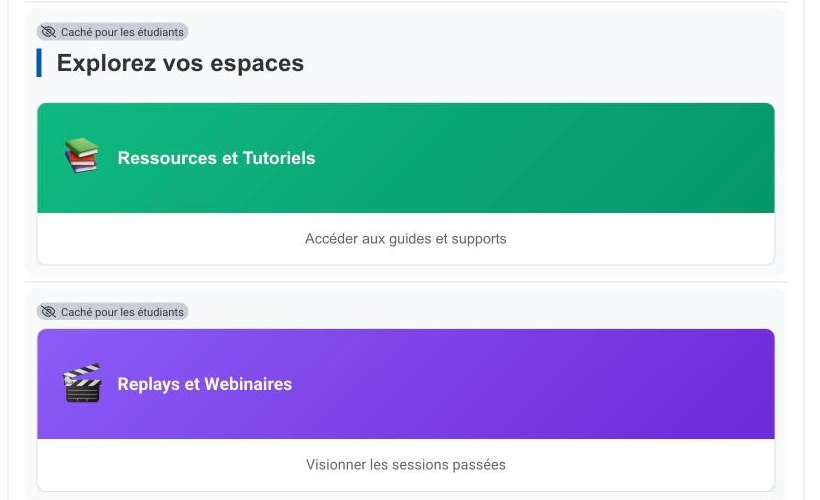
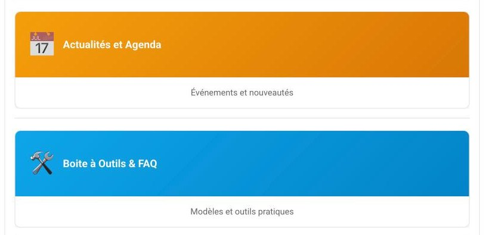
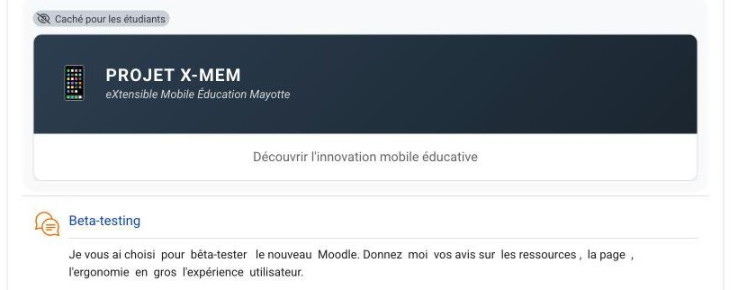

Étude de cas · Université de Mayotte
J'ai conçu, réalisé et piloté un point d'entrée unique sur Moodle pour informer, former et accompagner enseignants, personnels administratifs et étudiants. Le dispositif est issu de Vendredi Digital et s'inscrit dans la modernisation de la plateforme avec le thème Moove.

Contexte
Les ressources d'accompagnement au numérique étaient dispersées et peu lisibles selon les profils. L'objectif : un lieu central où chacun trouve l'information, la formation et l'aide adaptées à son rôle.
Mon rôle
Un seul porteur pour l'architecture, la réalisation technique, le pilotage et les contenus.
Modèle Informer, Former, Accompagner ; segmentation par public ; arborescence des espaces.
Composants HTML/CSS/JavaScript intégrés à Moodle, restrictions d'accès, visibilité par profil, thème Moove.
Coordination des parties prenantes, planification, organisation du bêta-test.
Ligne éditoriale, texte d'accueil « Karibu », libellés et microcopies.
Visite guidée
Chaque bloc répond à une intention pédagogique ou d'usage précise.

Données personnelles floutées.






Mesure
Mesure d'audience construite à partir des journaux Moodle, sur la période du 18 août au 2 septembre 2026 (phase de lancement). Les chiffres sont présentés tels quels, sans extrapolation.
Un signal de lancement, pas encore de popularité. Ressource la plus consultée : la Bibliothèque des Ressources Pédagogiques (17 consultations, 1 visiteur).
Même périmètre, mêmes définitions, six indicateurs :
Export ponctuel aujourd'hui, puis exports réguliers à définitions figées. Cible : un tableau de bord connecté aux logs Moodle.
Méthode : les actions de création, modification, restauration, inscription, sauvegarde et consultation des journaux sont exclues pour ne pas confondre activité technique et fréquentation.
Compétences
Suite